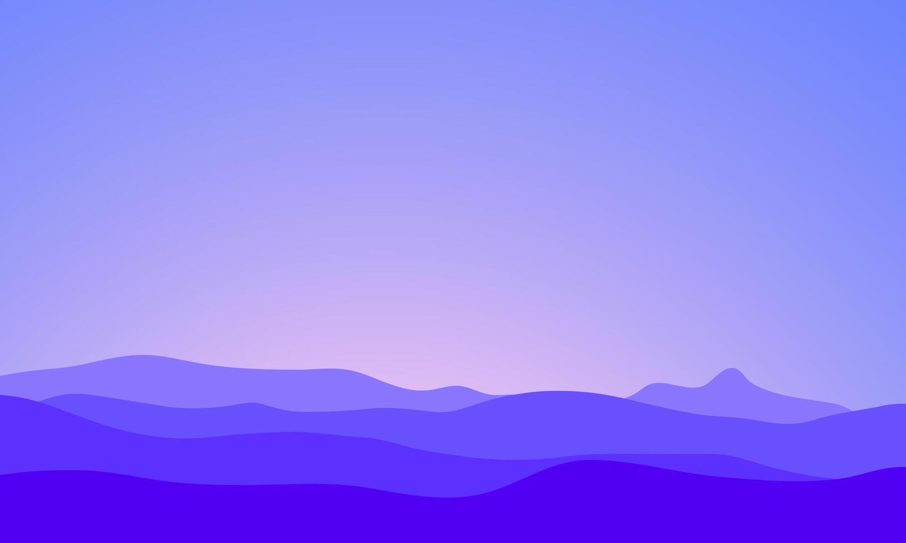

Web 开发
能独立完成静态网站的开发与部署，熟悉页面结构、响应式布局和基础交互。
请稍候
ABOUT / 01
一名开发者，也是一名终身学习者。对我来说，做东西是一种理解世界的方式。

我喜欢折腾网站和各种小工具，也享受从空白页面一点点把想法搭起来的过程。这个主页本身也是我的作品之一——从页面、样式到部署，都是一次边做边学的实践。
比起只停留在“我想学”，我更愿意先做一个小项目，再把遇到的问题和学到的东西记下来。这样一点一点积累，慢慢形成自己的作品集和方法。
目前我持续探索前端开发、自动化工具，以及 AI 在日常创作中的应用。如果你也喜欢通过实践学习，欢迎来聊聊。
认识更多同好 ↗SKILLS & INTERESTS
技能不是清单的终点，
而是下一次尝试的起点。
能独立完成静态网站的开发与部署，熟悉页面结构、响应式布局和基础交互。
用 Git 和 GitHub 管理代码，用清晰的文档整理项目与学习过程。
持续深入前端开发，探索自动化工具与 AI 如何融入日常开发。
A NOTE TO MYSELF
先做出来，再把它做好。
好奇心会带我们走得更远。